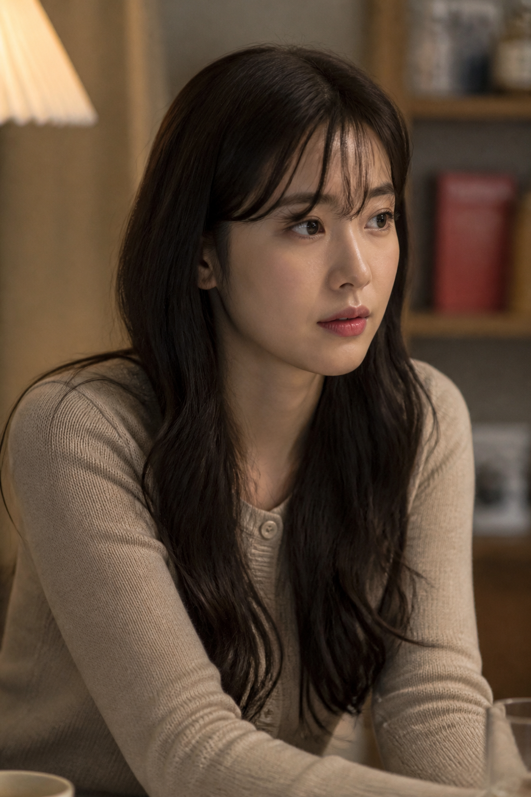
서윤…오늘도 …괜찮을까요?
선은 이미 한 번 무너졌다. 이제는, 서로를 조금 더 원하고 있었다.
누군가의 봄
EP.9 더 깊어지는 관계

선은 이미 한 번 무너졌다. 이제는, 서로를 조금 더 원하고 있었다.
중간 · 오는 길
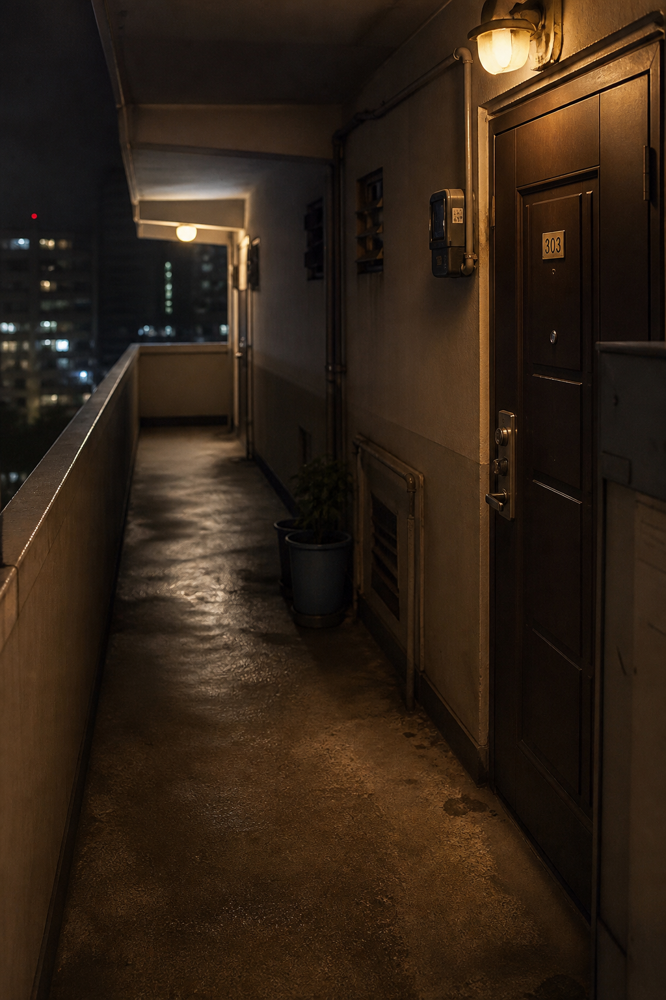
초인종을 누르기 전에 destin을 고친다. 늦었다는 걸, 복도에서 이미 안다.
중간 · 문 앞
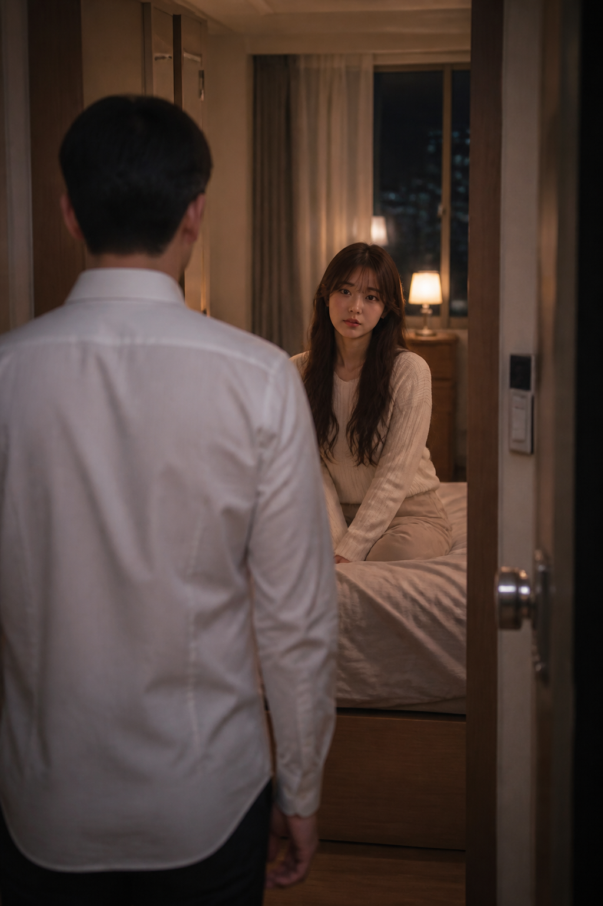
그는 자연스럽게 이 방을 찾는다. 나는 문을 열어 두고 기다렸다.
1. 기다리고 있는 그녀
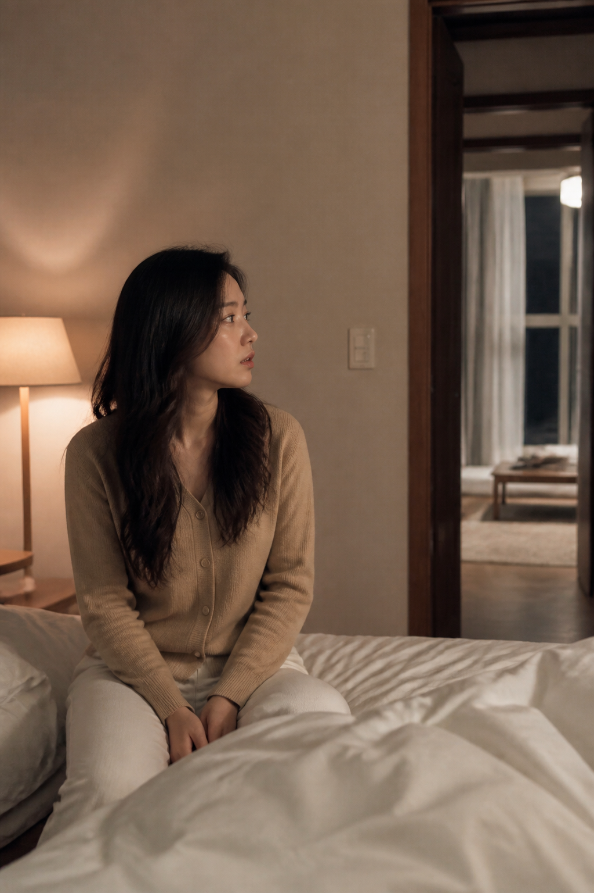
이제는 어색하지 않다. 그는 자연스럽게 내 방을 찾고, 나는 자연스럽게 그를 기다린다.
2. 가까워지는 거리
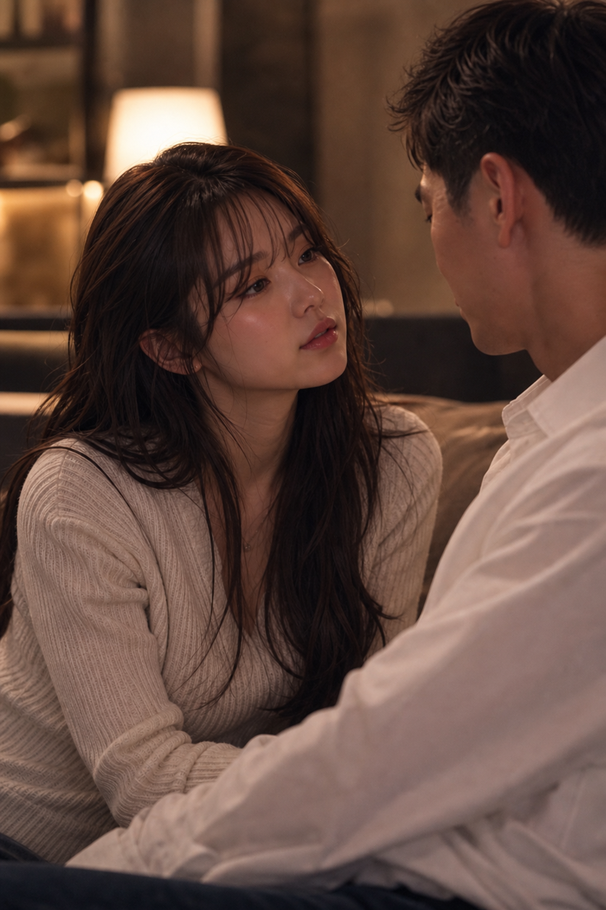
조심히 다가가던 길은, 이제 망설임이 없다.
중간 · 자리에서 일어나
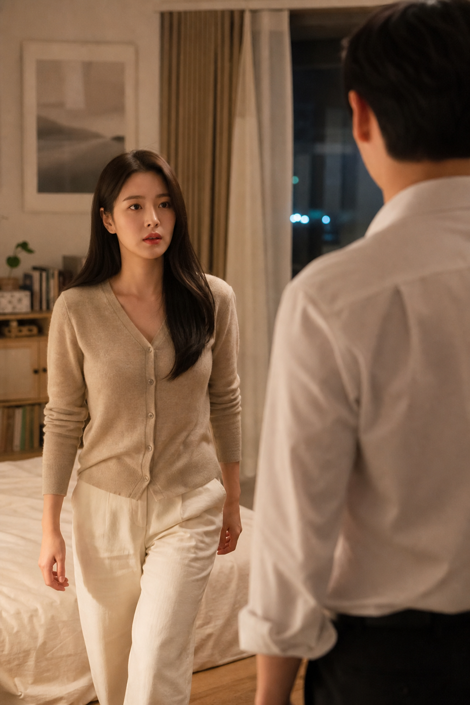
말은 이미 했다. 이제 몸이 먼저 움직인다.
3. 더 과감해진 그녀
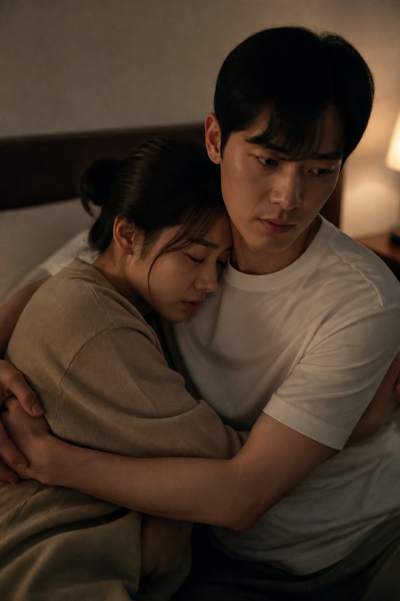
처음엔 조심스러웠지만, 이제는 먼저 다가간다. 그의 반응에 맞춰, 더 깊이 빠진다.
4. 서로에게 집중하는 시간
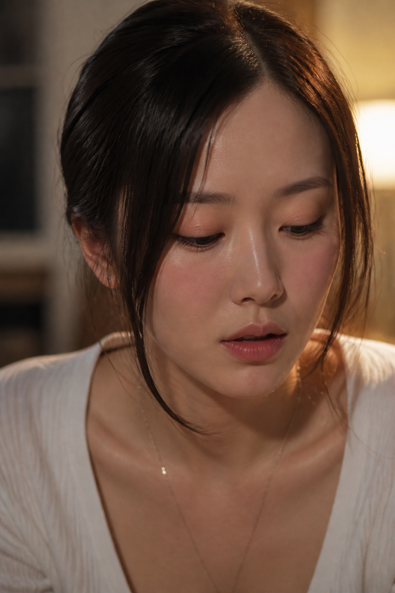
처음엔 숨소리만 방을 채운다. 이제 말보다 손이 많다.
중간 · 손이 멈추는 선
행위는 여기까지다. 시트가 접히고, 숨만 조금 거칠어진다.
5. 휠체어에서
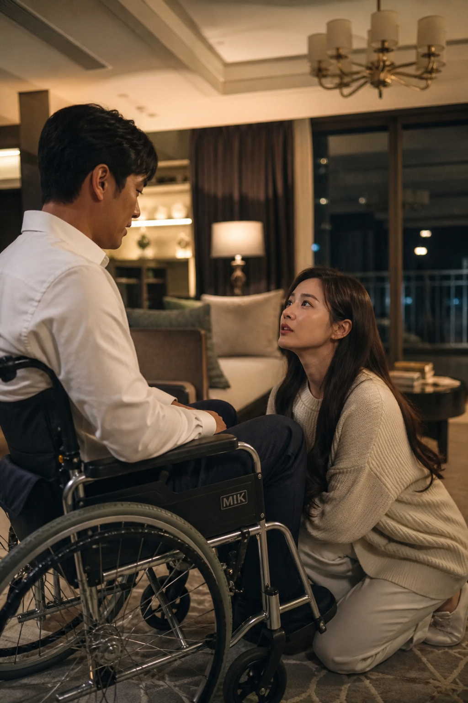
그의 불편한 몸은 이제 둘에게 장애가 아니다. 오히려 서로를 더 애타게 만든다.
6. 끝이 아닌, 여운
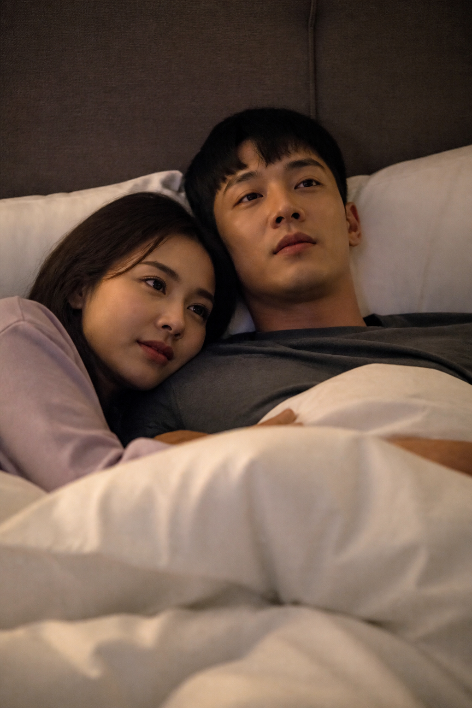
모든 것이 끝난 뒤에도 그녀는 오래 그 자리에 머문다. 이젠 끝이 아니라 다음이다.
7. 샤워 후
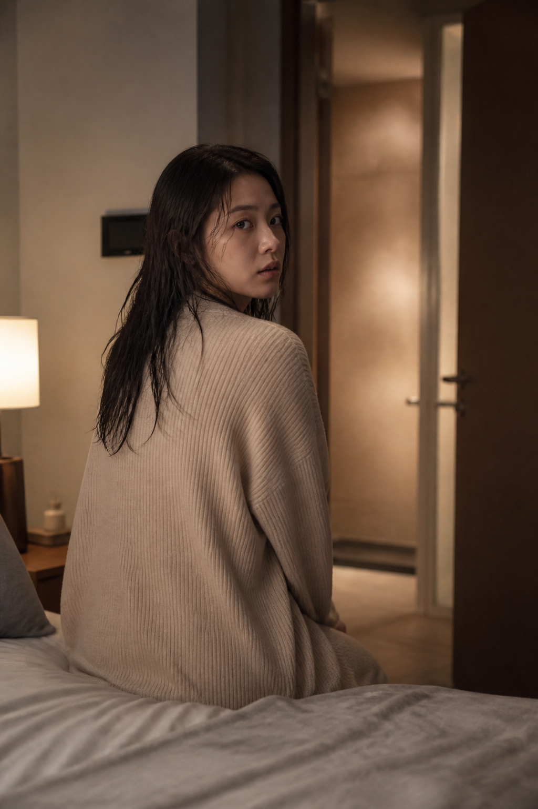
낯설었던 처음과 달리, 이제는 모든 것이 자연스럽다.
8. 다음 날 아침
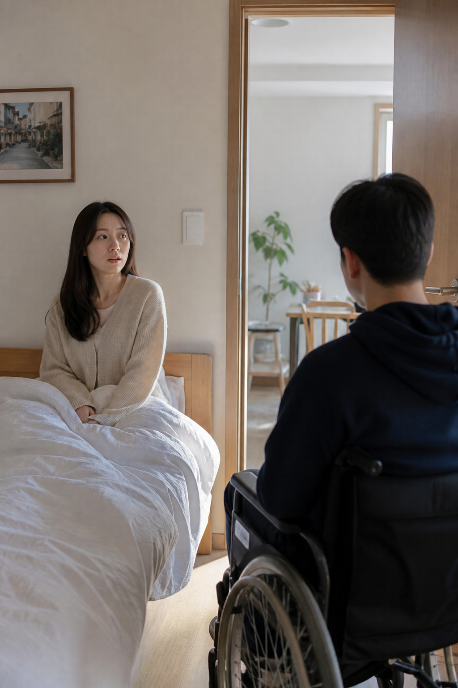
짧은 밤이었지만, 이제 둘은 서로를 더 원하게 되었다.
9. 혼자 남은 그녀
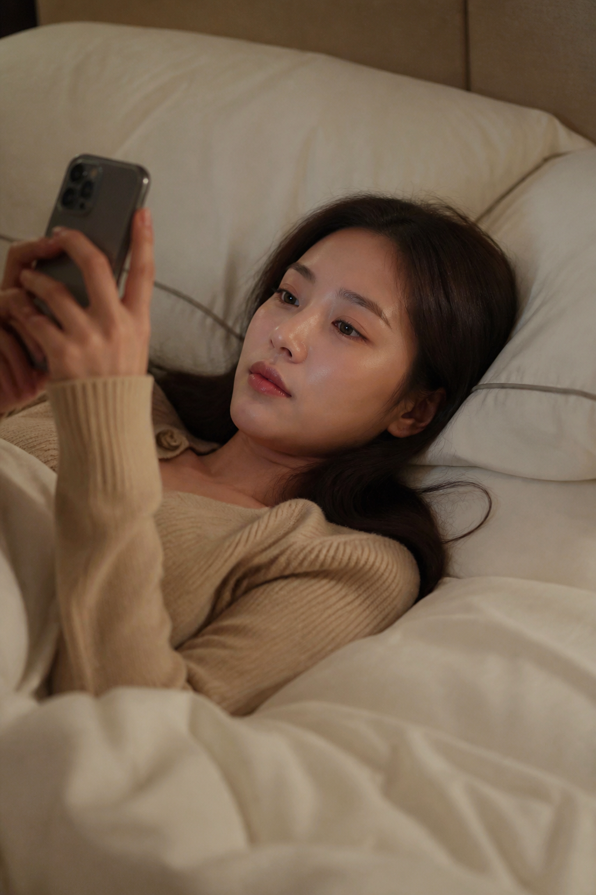
그가 돌아간 뒤에도 마음은 쉽게 가라앉지 않는다. 이제 그는 단순한 고객이 아니다.
10. 다음을 기대하며
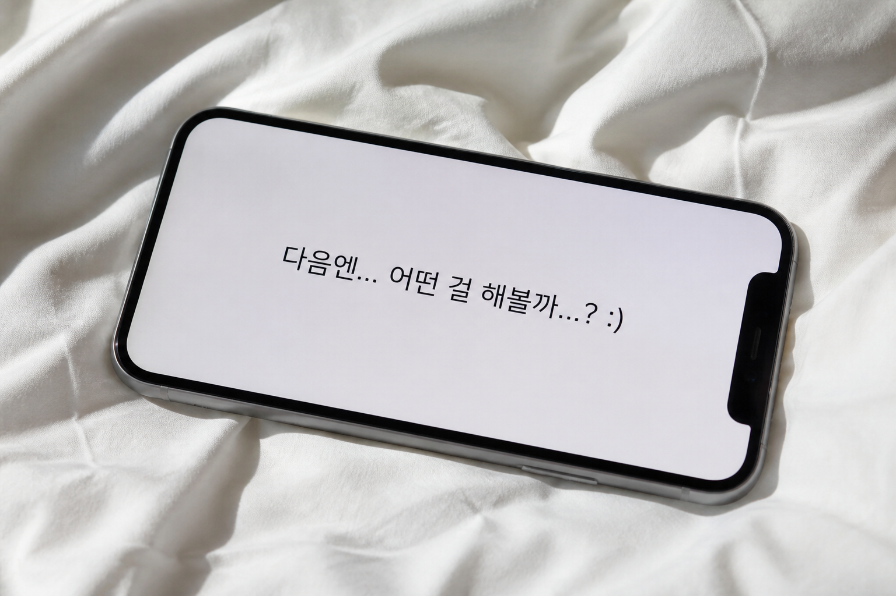
조금씩, 깊어지는 관계. 누구의 잘못도 아닌, 두 사람의 선택이었다.
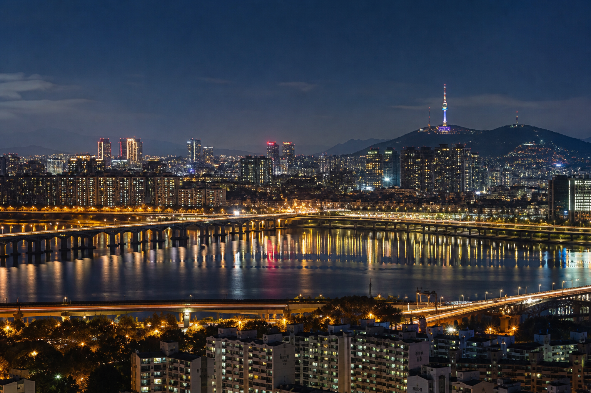
누군가의 봄
EP.10 멈출 수 없는 마음
이제, 우리는 조금 더 솔직해진다.